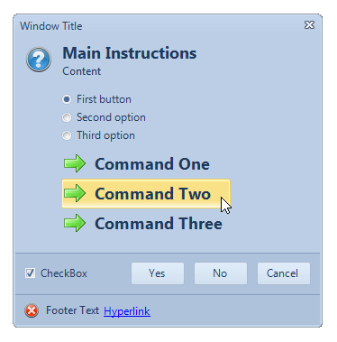
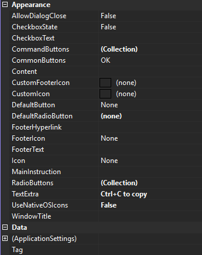

KryptonTaskDialog
The KryptonTaskDialog provides an extended version of the standard MessageBox but with more flexibility. The windows TaskDialog was introduced with Windows Vista and the Krypton version is intended to provide most, but not all, of the same functionality. Try using the KryptonTaskDialogExamples sample that comes with the Toolkit in order to see and experiment with the KryptonTaskDialog implementation. Figure 1 shows an example of the KryptonTaskDialog with all the possible options used.

Figure 1 – KryptonTaskDialog Example
Usage
You can invoke the KryptonTaskDialog in one of two ways. The quickest and easiest is to use one of the overrides for the static Show method. This can be called without the need to create an instance of any component and will return a DialogResult as the result of the operation. This method of operation mimics the static Show methods that exist for the KryptonMessageBox and standard .NET MessageBox components. Here is an example code showing how this can be achieved:-
DialogResult result = KryptonTaskDialog.Show("Window Title",
"Main Instructions",
"Content",
MessageBoxIcon.Information,
TaskDialogButtons.OK \|
TaskDialogButtons.Cancel);
switch (result)
{
case DialogResult.OK:
break;
case DialogResult.Cancel:
break;
}
A limitation with the above approach is that not all the functionality of the task dialog can be accessed in this manner. To enable use of all the possible features you should use the second approach. This involves creating an instance of the KryptonTaskDialog and then setting properties on the instance before calling the ShowDialog method of the component. On return from the ShowDialog call you can then examine the properties of the component that have been updated by the user operating the dialog. For example, the KryptonTaskDialog.CheckboxState will be updated with the checked state of the check box control that was shown to the user in the dialog. Here is an example of using the second approach:-
using(KryptonTaskDialog kryptonTaskDialog = new KryptonTaskDialog())
{
kryptonTaskDialog.WindowTitle = "Window Title";
kryptonTaskDialog.MainInstruction = "Main Instruction";
kryptonTaskDialog.Content = "Content";
kryptonTaskDialog.Icon = MessageBoxIcon.Warning;
kryptonTaskDialog.CommonButtons = TaskDialogButtons.OK |
TaskDialogButtons.Cancel;
kryptonTaskDialog.DefaultButton = TaskDialogButtons.OK;
kryptonTaskDialog.FooterText = "Footer Text";
kryptonTaskDialog.FooterHyperlink = "Hyperlink";
kryptonTaskDialog.FooterIcon = MessageBoxIcon.Error;
kryptonTaskDialog.CheckboxText = "Checkbox Text";
kryptonTaskDialog.CheckboxState = false;
kryptonTaskDialog.AllowDialogClose = true;
DialogResult result = kryptonTaskDialog.ShowDialog();
switch (result)
{
case DialogResult.OK:
break;
case DialogResult.Cancel:
break;
}
}
To simplify the setting of the properties it would be easier to drag the KryptonTaskDialog from the toolbox onto the Form and then use the properties window to modify the component properties as needed at design time. Then you need only invoke the ShowDialog method and process the result rather than manually writing the code to set the properties. This also makes it easier to hook into the events generated by the component.
String Localization
The dialog buttons text will always display in English by default. If you need to localize the strings to other languages you can do so by placing a KryptonManager component on your main Form. Use the properties window and then expand the GlobalStrings property and modify the strings as needed.
KryptonTaskDialog properties
Figure 2 shows a list of all the properties that can be used to define the appearance of the component.

Figure 2 – KryptonTaskDialog properties
AllowDialogClose
The dialog will only have a window close button if either this property is defined as True or the Cancel button is one of the CommonButtons, otherwise the dialog will not have a close button. When the dialog is allowed to be closed the user can use the ESCAPE key, the ALT+F4 key combination or the window close button.
CheckboxState, CheckboxText
If the CheckboxText is defined with a string then a check box control will appear on the dialog buttons area of the window with an initial state of CheckboxState. When the window has been dismissed the CheckboxState will be updated with whatever value the user defined whilst it was showing.
CommonButtons, DefaultButton
The set of dialog buttons displayed is determined by the CommonButtons setting. DefaultButton specifies which of the showing dialog buttons should be the default and so initially focused when the dialog is displayed.
RadioButtons, DefaultRadioButton, CommandButtons
Just below the main text of the dialog a set of radio buttons are displayed in response to the entries in the RadioButtons collection. The initial radio button to be checked is defined by the DefaultRadioButton property. This property is updated as the user selects different radio buttons at runtime and so once the dialog is dismissed you can examine the DefaultRadioButton property to find out what entry the user selected. The CommandButtons collection specifies a series of display buttons below the radio buttons. If the user selects one of these buttons then the DialogResult defined for that CommonButtons entry is returned as the result of showing the dialog.
FooterText, FooterHyperlink, FooterIcon, CustomFooterIcon
The footer area will be shown if any of the footer related properties has been defined. The CustomFooterIcon is used as the source of the footer icon if defined, otherwise the FooterIcon property is used instead. To the right of the icon any FooterText string is shown and finally the FooterHyperlink string is shown as a link label that can be clicked. If the user clicks the link label then the KryptonTaskDialog.FooterHyperlinkClicked event is fired so you can perform an appropriate action.
WindowTitle, MainInstruction, Content, Icon, CustomIcon
These properties represent the basic settings of the dialog. The WindowTitle is used as the caption shown in the dialog caption bar. MainInstruction and Content are strings displayed in the main section of the dialog client area. The CustomIcon is used as the source of the main icon if defined, otherwise the Icon property is used instead. See Figure 1 for an example of how the various properties are displayed at runtime.
Tag
Custom data field for use by the application developer.
KryptonTaskDialog events
There is just a single event of interest. The KryptonTaskDialog.FooterHyperlinkClicked event is fired when the user clicks the footer hyper link label. This occurs whilst the dialog is still being shown.